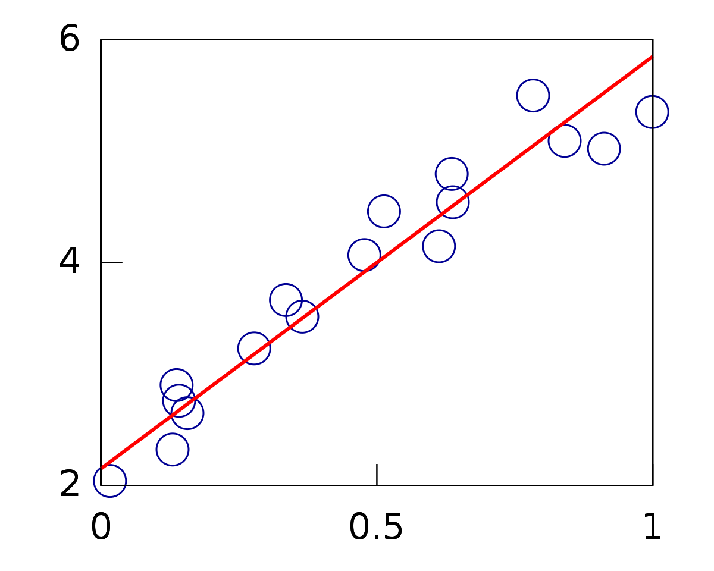
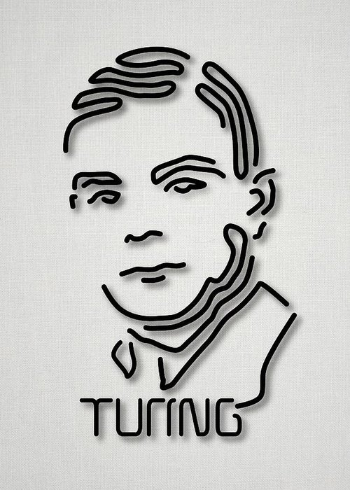

AI Papers
AI Pioneers
Publications
- Rounding-Off Errors in Matrix Processes
- Can automatic calculating machines be said to think?
- Computability and λ-definability
- Digital computers applied to games
- Can a machine think?
- The Chemical Basis of Morphogenesis
- Systems of Logic Based on Ordinals
- Computable Numbers, with an Application to the Entscheidungsproblem
- Intelligent Machinery
- Some Calculations of the Riemann Zeta-Function
- Lecture to the London Mathematical Society on 20 February 1947
- Computing Machinery and Intelligence
Publications
- Proof of the Quasi-Ergodic Hypothesis
- On infinite direct products
- Continuous Geometry
- First Draft of a Report on the EDVAC
- Functional Operators: Measures and integrals
- Distribution of the Ratio of the Mean Square Successive Difference to the Variance
- Numerical Inverting of Matrices of High Order
- Numerical Integration of the Barotropic Vorticity Equation
- The General and Logical Theory of Automata
- Various Techniques Used in Connection With Random Digits
- Planning and Coding of Problems for an Electronic Computing Instrument
- On Rings of Operators II
- On an algebraic generalization of the quantum mechanical formalism (Part 1)
- The Computer and the Brain
- The Logic of Quantum Mechanics
- Theory of Games and Economic Behavior
- Theory of Self-Reproducing Automata
- Probabilistic logics and synthesis of reliable organisms from unreliable components
- A Model of General Economic Equilibrium
- Can We Survive Technology?
- On Complete Topological Spaces
- Fourier Integrals and Metric Geometry
- The Statistics of the Gravitational Field Arising from a Random Distribution of Stars
- Statistical Methods in Neutron Diffusion
- Physical Applications of the Ergodic Hypothesis
- On Regular Rings
Publications
- Generality in Artificial Intelligence
- From here to human-level AI
- Notes on formalizing context
- Epistemological Problems of Artificial Intelligence
- In Memoriam: Arthur Samuel: Pioneer in Machine Learning
- Programs with Common Sense
- An architecture of diversity for commonsense reasoning
- Making Robots Conscious of their Mental States
- What has AI in Common with Philosophy?
- Report on the Algorithmic Language ALGOL 60
- Applications of Circumscription to Formalizing Common Sense Knowledge
- Ascribing Mental Qualities to Machines
- Circumscription — A Form of Non-Monotonic Reasoning
- Revised Report on the Algorithmic Language Algol 60
- The Common Business Communication Language
- The well-designed child
- Correctness of a Compiler for Arithmetic Expressions
- First Order Theories of Individual Concepts and Propositions
- Queue- based Multi-processing Lisp
- Phenomenal Data Mining: From Data to Phenomena
- Chess as the Drosophila of AI
- Elaboration Tolerance
- Elephant 2000: A Programming Language Based on Speech Acts
- Formalizing Context (Expanded Notes)
- The Inversion of Functions Defined by Turing Machines
- Review of "Artificial Intelligence: A General Survey"
- LISP 1.5 Programmer's Manual
- History of Lisp
- LISP I Programmer's Manual
- A Basis for a Mathematical Theory of Computation
- Recursive Functions of Symbolic Expressions Their Computation by Machine, I
- Some Philosophical Problems from the Standpoint of Artificial Intelligence
- Modality, Si! Modal Logic, No!
- Formalization of two Puzzles Involving Knowledge
- REVIEW OF THE EMPEROR'S NEW MIND by Roger Penrose
- Actions and other events in situation calculus
- Some expert systems need common sense
- A Tough Nut for Proof Procedures
- Towards a Mathematical Science of Computation
- What is artificial intelligence?
- Artificial Intelligence, Logic and Formalizing Common Sense
- The Mutilated Checkerboard in Set Theory
- Coloring Maps And The Kowalski Doctrine
- Useful Counterfactuals
- Creative solutions to problems
- Free Will - Even for Robots
- Simple Deterministic Free Will
- The Little Thoughts of Thinking Machines
- A Logical AI Approach to Context
- Combining Narratives
- Parameterizing Models of Propositional Calculus Formulas
- Philosophical and Scientific Presuppositions of Logical AI
- Roofs And Boxes
- Notes On Self-awareness
- Appearance And Reality
- John Searle's Chinese Room Argument
- Networks Considered Harmful - For Electronic Mail
- Universality: Or Why There Are Separate Sciences
- An Everywhere Continuous Nowhere Differential Function
- Todd Moody's Zombies
- The Philosophy of AI and the AI of Philosophy
- ALGOL 48 and ALGOL 50: ALGOLic Languages in Mathematics
- Approximate Objects And Approximate Theories
- AI Needs more Emphasis on Basic Research
- What is common sense
- Concepts of Logical AI
- In the Betan Embassy on Barrayar
- Making Computer Chess Scientific
- An Example for Natural Language Understanding and the AI Problems it Raises
- The Future Of Scientific Publication
- The Robot and the Baby
- Some Sitcalc Formulas for Robot Soccer
- Children's To Save Defends Alfalfa Sprouts
- Teller, Heisenberg And The Bomb
- Letter To Christian Physicists
- "Computer chess" and human chess
- Formalization of Strips in Situation Calculus
- Teleservice
- What AI Needs From Computational Linguistics
Publications
- Expert Systems: Principles and Practice
- An Interview with EDWARD FEIGENBAUM
- The Handbook of Artificial Intelligence Volume III
- Computers and Thought
- Signal-to-Symbol Transformation: HASP/SIAP Case Study
- Soviet cybernetics and computer sciences, 1960
- An Information Processing Theory of Verbal Learning
- A Theory of the Serial Position Effect
- The Handbook of Artificial Intelligence Volume I
- The Handbook of Artificial Intelligence Volume II
Publications
- OM: "One Tool for Many (Indian) Languages"
- The Hearsay Speech Understanding System: An Example of the Recognition Process
- Transmembrane helix prediction using amino acid property features and latent semantic analysis
- Digital Information Organization in Japan
- Collaborative Research: ITR/ANIR: 100 Mb/sec For 100 Million Households
- Three Open Problems in AI
- A 3D-Object Reconstruction System Integrating Range-Image Processing and Rapid Prototyping
- Foundations and Grand Challenges of Artificial Intelligence
- Multiplicative Speedup of Systems
- Characterization of protein secondary structure
- Minimizing Computational Cost for Dynamic Programming Algorithms
- Comparative n-gram analysis of whole-genome protein sequences
- Computational Biology and Language
- An Integral Approach to Free-Form Object Modeling
- Knowledge Guided Learning of Structural Descriptions
- Spoken-Language Research at Carnegie Mellon
- The Digital Library of India Project: Process, Policies and Architecture
- Robotics and Intelligent Systems in Support of Society
- Improving Recognition Accuracy on CVSD Speech under Mismatched Conditions
- Interviews: The Challenges of Emerging Economies
- Computer vision: the challenge of imperfect inputs
- An overview of the SPHINX speech recognition system
- Techniques for the Creation and Exploration of Digital Video Libraries
- A Historical Perspective of Speech Recognition
- PCtvt: a Multifunction Information Appliance for Illiterate People
- Improving Pronunciation Inference using N-Best List, Acoustics and Orthography
- To Dream The Possible Dream
- A. M. Turing Award Oral History Interview with Raj Reddy
- Principal Component Analysis with Missing Data and Its Application to Polyhedral Object Modeling
Publications
- Structuring Causal Tree Models with Continuous Variables
- Distinctive properties of quantized vortices in superconducting films
- Invited Commentary: Understanding Bias Amplification
- The Mystery of Problem Representations
- A New Graphical Model for the Representation of Marginalized DAG-Representable Relations
- Vortexes are creating a stir in the superconductor field
- A Framework for Processing Value Judgments
- On the Connection Between the Complexity and Credibility of Inferred Models
- SCOUT: A Simple Game-Searching Algorithm with Proven Optimal Properties
- Asymptotic Properties of Minimax Trees and Game-Searching Procedures
- Storage Space versus Validity of Answers in Probabilistic Question-Answering Systems
- Probabilistic Analysis of the Complexity of A*
- A Space-Efficient On-Line Method of Computing Quantile Estimates
- A Computational Model for Causal and Diagnostic Reasoning in Inference Systems
- Causal and Diagnostic Inferences: A Comparison of Validity
- The Optimality of A* Revisited
- GODDESS: a Goal-Directed Decision Structuring System
- Reverend Bayes on Inference Engines: A Distributed Hierarchical Approach
- Fusion, Propagation, and Structuring in Belief Networks
- Bayesian Networks: a Model of Self-Activated Memory for Evidential Reasoning
- A Constraint-Propagation Approach to Probabilistic Reasoning
- How to Do with Probabilities What People Say You Can't
- On Evidential Reasoning in a Hierarchy of Hypotheses
- GRAPHOIDS: a Graph-Based Logic for Reasoning about Relevance Relations (Long Technical Report)
- GRAPHOIDS: a Graph-Based Logic for Reasoning about Relevance Relations (Technical Report)
- On the Logic of Representing Dependencies by Graphs
- Comprehension-Driven Generation of Meta-Technical Utterances in Math Tutoring
- Learning Link-Probabilities in Causal Trees
- Distributed Revision of Composite Beliefs
- Causal Networks: Semantics and Expressiveness
- A Distributed Diagnosis of Systems with Multiple Faults
- Evidential Reasoning Using Stochastic Simulation of Causal Models
- Embracing Causality Default Reasoning
- An Improved Constraint-Propagation Algorithm for Diagnosis
- Search Techniques
- Decomposing a Relation into a Tree of Binary Relations
- Enhancement Schemes for Constraint Processing: Backjumping, Learning, and Cutset Decomposition
- The Logic of Representing Dependencies by Directed Graphs
- Removing Redundancies in Constraint Networks
- Do we Need Higher-Order Probabilities and, If so, What do they Mean?
- On logic and probability
- On Probability Intervals
- Reasoning Under Uncertainty
- Evidential Reasoning Under Uncertainty
- The Logic of Influence Diagrams
- Conditional independence and its representations
- Axioms and Algorithms for Inferences Involving Probabilistic Independence
- Experimental Evaluation of Preprocessing Algorithms for Constraint Satisfaction Problems (Technical Report)
- Experimental Evaluation of Preprocessing Algorithms for Constraint Satisfaction Problems (Long Technical Report)
- Deciding Consistency of Databases Containing Defeasible and Strict Information
- On the consistency of defeasible databases
- Logical and algorithmic properties of independence and their application to Bayesian networks
- Locality-Bounded Rationality
- Probabilistic Semantics for Nonmonotonic Reasoning
- Probabilistic Semantics for Nonmonotonic Reasoning: A Survey
- d-Separation: From Theorems to Algorithms
- System Z: A Natural Ordering of Defaults with Tractable Applications to Nonmonotonic Reasoning
- Learning Structure from Data: A Survey
- From local to global consistency
- Reasoning with Belief Functions: An Analysis of Compatibility
- Rejoinder to Comments on "Reasoning With Belief Functions: An Analysis of Compatibility"
- Structure-driven algorithms for truth maintenance
- Graphoids: A Qualitative Framework for Probabilistic Inference
- A Maximum Entropy Approach to Nonmonotonic Reasoning
- Probabilistic and Qualitative Abduction
- Tree Decomposition with Applications to Constraint Processing
- On the Expressiveness of Networks with Hidden Variables
- Learning Causal Trees from Dependence Information
- Equivalence and Synthesis of Causal Models
- Faster Constraint Satisfaction Algorithms for Temporal Reasoning
- Directed Constraint Networks: A Relational Framework for Causal Modeling
- A Statistical Semantics for Causation
- A Theory of Inferred Causation
- Qualitative probabilities for default reasoning, belief revision, and causal modeling
- Structure identification in relational data
- Belief networks revisited
- An Algorithm for Deciding if a Set of Observed Independencies has a Causal Explanation
- Rank-based systems: A simple approach to belief revision, belief update, and reasoning about evidence and actions
- When Can Association Graphs Admit A Causal Explanation?
- A simple algorithm to construct a consistent extension of a partially oriented graph
- Qualitative Probabilities: A Normative Framework for Commonsense Reasoning
- Graphical Aspects of Causal Models
- A Calculus of Pragmatic Obligation
- Aspects of Graphical Models Connected With Causality
- From Bayesian Networks to Causal Networks
- Comment: Graphical Models, Causality, and Intervention
- A New Characterization of Graphs Based on Interception Relations
- Nonparametric Bounds on Causal Effects from Partial Compliance Data
- Universal Formulas for Treatment Effects from Noncompliance Data
- Bounds on Treatment Effects from Studies with Imperfect Compliance
- On the Statistical Interpretation of Structural Equations
- On the Logic of Iterated Belief Revision
- Causal Inference from Indirect Experiments (Long Technical Report)
- Causal Inference from Indirect Experiments (Technical Report)
- Symbolic Causal Networks for Reasoning about Actions and Plans
- On the Identification of Nonparametric Structural Models
- Mediating instrumental variables
- A Note on Testing Exogeneity of Instrumental Variables
- On the Testability of Causal Models with Latent and Instrumental Variables
- A Probabilistic Calculus of Actions
- Probabilistic Evaluation of Counterfactual Queries
- Counterfactual Probabilities: Computational Methods,Bounds, and Applications
- Qualitative Decision Theory
- On testing whether an Embedded Bayesian Network represents a probability model
- Bayesian Networks
- Three Statistical Puzzles
- Causal diagrams for empirical research (with Discussions)
- Causal diagrams for empirical research (with appendix on structural equations and counterfactuals)
- Probabilistic Evaluation of Sequential Plans from Causal Models with Hidden Variables
- Causation, action, and counterfactuals (Technical Report)
- Causation, action, and counterfactuals
- Testing Identifiability of Causal Effects
- Counterfactuals and Policy Analysis in Structural Models
- Graphical Models for Probabilistic and Causal Reasoning
- Structural and Probabilistic Causality
- Covariate Selection: A Simple Solution To a Long-Standing Problem
- Axioms of causal relevance (Long Technical Report)
- Axioms of causal relevance (Technical Report)
- A clinician's tool for analyzing non-compliance
- Identifying Independencies in Causal Graphs with Feedback
- TETRAD and SEM
- On the Foundation of Structural Equation Models or When Can We Give Causal Interpretation to Structural Coefficients?
- Bayesian Networks
- The Art and Science of Cause and Effect
- The New Challenge: From a Century of Statistics to the Age of Causation
- An Axiomatic Characterization of Causal Counterfactuals
- Causal Diagrams for Epidemiologic Research
- Confounding and collapsibility in causal inference
- Graphs, Causality, and Structural Equation Models
- Finding Minimal D-separators
- Why there is no statistical test for confounding, why many think there is, and why they are almost right
- Testing regression models with fewer regressors
- Probabilities Of Causation: Three Counterfactual Interpretations And Their Identification
- Statistics, Causality, and Graphs
- Simpson's paradox: An anatomy
- Reasoning with Cause and Effect
- Reasoning with Cause and Effect (Transcript of lecture given at IJCAI-99, Stockholm, Sweden, on 4 August 1999)
- Causes and explanations: A structural-model approach − Part I: Causes
- Causes and explanations: A structural-model approach − Part I: Causes (Technical Report)
- Causes and explanations: A structural-model approach − Part II: Causes
- Causes and explanations: A structural-model approach − Part II: Causes (Technical Report)
- Instrumentality Tests Revisited
- A Calculus for Causal Relevance
- The Logic of Counterfactuals in Causal Inference (Discussion of 'Causal Inference without Counterfactuals' by A.P. Dawid)
- Pearl: Comment
- Probabilities of causation: Bounds and identification
- Probabilities of causation: Bounds and identification (Technical Report)
- Direct and Indirect Effects(In Proceedings of the American Statistical Association Joint Statistical Meetings, Minneapolis, MN: MIRA Digital Publishing, 1572-1581, 2005)
- Direct and Indirect Effects (In Proceedings of the Seventeenth Conference on Uncertainy in Artificial Intelligence, San Francisco, CA: Morgan Kaufmann, 411, 20, 2001.)
- Parameter Identification: A New Perspective (Second Draft)
- Bayesian Networks (Technical Report)
- Exogeneity and Superexogeneity: A No-tear Perspective
- On Two Pseudo-Paradoxes in Bayesian Analysis
- Causal Discovery from Changes
- Bayesian Networks, Causal Inference and Knowledge Discovery
- Causal Inference in the Health Sciences: A Conceptual Introduction
- Comments on Seeing and Doing
- Comments on Nozer Singpurwalla's "On Causality and Causal Mechanisms"
- Bayesianism and Causality, or, Why I am Only a Half-Bayesian
- Causal Inference in Statistics: A Gentle Introduction
- A General Identification Condition for Causal Effects
- A New Identification Condition for Recursive Models With Correlated Errors
- A Graphical Criterion for the Identification of Causal Effects in Linear Models
- A New Characterization of the Experimental Implications of Causal Bayesian Networks
- Causality and Counterfactuals in the Situation Calculus
- Strategies for Determining Causes of Events
- Generalized Instrumental Variables
- Qualitative MDPs and POMDPs - An Order of Magnitude Approximation
- On the Testable Implications of Causal Models with Hidden Variables
- Reply to Woodward
- Studies in Causal Reasoning and Learning
- Comments on Neuberg's Review of Causality
- Clarifying the Usage of Structural Models for Commonsense Causal Reasoning
- LAYERWIDTH: Analysis of a New Metric for Directed Acyclic Graphs
- Graphical Methods for Identification in Structural Equation Models
- Modeling and Solving Sequential Decision Problems with Uncertainty and Partial Information
- Faster Heuristic Search Algorithms for Planning with Uncertainty and Full Feedback
- GPT Meets PSR
- Labeled RTDP: Improving the Convergence of Real-Time Dynamic Programming
- Robustness of Causal Claims
- Identifiability of Path-Specific Effects (In Proceedings of International Joint Conference on Artificial Intelligence, Edinburgh, Schotland, 357-363, August 2005)
- Identifiability of Path-Specific Effects (Shortened version to appear In Proceedings of International Joint Conference on Artificial Intelligence, Edinburgh, Schotland, 2005)
- What's in a translation rule?
- Influence Diagrams − Historical and Personal Perspectives
- Identification of Joint Interventional Distributions in Recursive Semi-Markovian Causal Models
- A Characterization of Interventional Distributions in Semi-Markovian Causal Models
- Appendum to Identification of Conditional Interventional Distributions
- Identification of Conditional Interventional Distributions
- Two journeys into human reasoning
- Causal Diagrams
- Graphical Condition for Identi cation in Recursive SEM
- What Counterfactuals Can Be Tested
- Bounds on Direct Effects in the Presence of Confounded Intermediate Variables
- Complete Identification Methods for the Causal Hierarchy
- The Mathematics of Causal Inference in Statistics
- The Mathematics of Causal Relations
- Dormant Independence
- Dormant Independence (Shorter version to appear in AAAI-08)
- Reviews Symposium
- Confounding Equivalence in Causal Inference (In P. Grunwald and P. Spirtes, editors, Proceedings of the Twenty-Sixth Conference on Uncertainty in Artificial Intelligence, 433-441. AUAI, Corvallis, OR, 2010)
- Confounding Equivalence in Causal Inference
- Letter To The Editor: Remarks On The Method Of Propensity Score
- Causal Inference
- The Science and Ethics of Causal Modeling
- Myth, Confusion, and Science in Causal Analysis
- Effects of Treatment on the Treated: Identification and Generalization
- Effects of Treatment on the Treated: Identification and Generalization (Extended version)
- Causal inference in statistics: An overview
- The Structural Theory of Causation
- An Introduction to Causal Inference
- The foundations of causal inference
- On a Class of Bias-Amplifying Variables that Endanger Effect Estimates
- On Measurement Bias in Causal Inference
- On the Consistency Rule in Causal Inference: Axiom, Definition, Assumption, or Theorem?
- Physical and Metaphysical Counterfactuals: Evaluating Disjunctive Actions
- The algorithmization of counterfactuals
- Causal Diagrams
- The Mediation Formula: A guide to the assessment of causal pathways in nonlinear models
- Commentator: A Front-End User-Interface Module for Graphical and Structural Equation Modeling
- Measurement bias and effect restoration in causal inference
- Belief Propagation
- Adjustments and their Consequences — Collapsibility Analysis using Graphical Models
- The Causal Foundations of Structural Equation Modeling
- Transportability across studies: A formal approach
- Transportability of Causal and Statistical Relations: A Formal Approach
- External Validity and Transportability: A Formal Approach
- Statistics and Causality: Separated to Reunite —— Commentary on Bryan Dowd's "Separated at Birth"
- The Curse of Free-Will and the Paradox of Inevitable Regret
- Foreword (In Targeted Learning by Mark J. van der Laan and Sherri Rose, Springer, New York, pp. vii--x, 2011)
- The Causal Mediation Formula — A Guide to the Assessment of Pathways and Mechanisms
- Comments and Controversies: Graphical models, potential outcomes and causal inference: Comment on Lindquist and Sobel
- Controlling Selection Bias in Causal Inference
- Principal Stratification – A goal or a tool?
- Local Characterizations of Causal Bayesian Networks
- Invited Commentary: Understanding Bias Amplification
- Some Thoughts Concerning Transfer Learning, with Applications to Meta-analysis and Data-sharing Estimation
- Interpretation and Identification of Causal Mediation (Extended Version)
- Interpretation and Identification of Causal Mediation
- Transportability of Causal Effects: Completeness Results
- Trygve Haavelmo and the Emergence of Causal Calculus
- A note on the pairwise Markov condition in directed Markov fields
- Eight Myths About Causality and Structural Equation Models
- Correlation and Causation – the logic of co-habitation
- Regression and Causation: A Critical Examination of Six Econometrics Textbooks
- Graphoids over Counterfactuals
- Causal Inference by Surrogate Experiments: z-Identifiability
- Book Reviews: Bias and Causation, Models and Judgment for Valid Comparisions by H.I. Weisberg
- External Validity: From Do-Calculus to Transportability Across Populations
- The Do-Calculus Revisited
- A General Algorithm for Deciding Transportability of Experimental Results
- A solution to a class of selection-bias problems
- Detecting Latent Heterogeneity
- Meta-Transportability of Causal Effects: A Formal Approach
- Causal Transportability with Limited Experiments
- Linear Models: A Useful "Microscope" for Causal Analysis
- Graphical Models for Inference with Missing Data
- Comments on 'Surrogate measures and consistent surrogates' (by Tyler VanderWeele)
- Comment on 'Causal inference, probability theory, and graphical insights' (by Stuart G. Baker)
- Structural Counterfactuals: A Brief Introduction
- Comment: Understanding Simpson's Paradox
- On the Testability of Models with Missing Data
- The Mathematics of Causal Inference
- Recoverability and Testability of Missing data: Introduction and Summary of Results
- Transportability from Multiple Environments with Limited Experiments
- Reflections on Heckman and Pinto's "Causal Analysis After Haavelmo"
- Reply to Commentary by Imai, Keele, Tingley, and Yamamoto Concerning Causal Mediation Analysis
- Is Scientific Knowledge Useful for Policy Analysis? A Peculiar Theorem Says: No
- The Deductive Approach to Causal Inference
- Recovering from Selection Bias in Causal and Statistical Inference
- Testable Implications of Linear Structural Equation Models
- Random Bayesian networks with bounded indegree
- Causes of Effects and Effects of Causes (Long version of paper in Journal of Sociological Methods and Research, 44(1): 149-164, 2015)
- Causes of Effects and Effects of Causes
- Graphical Tools for Linear Structural Equation Modeling
- A short note on the virtues of graphical tools
- Causal, Casual and Curious: Lord's Paradox Revisited – (Oh Lord! Kumbaya!)
- In Defense of Unification (Comments on West and Koch's review of Causality)
- A Note on Causes of Effects
- Efficient Algorithms for Bayesian Network Parameter Learning from Incomplete Data
- Efficient Algorithms for Bayesian Network Parameter Learning from Incomplete Data
- Efficient Algorithms for Bayesian Network Parameter Learning from Incomplete Data (Proceedings of the 31st Conference on Uncertainty in Artificial Intelligence, pp. 161-170, 2015)
- Graphical Models for Recovering Probabilistic and Causal Queries from Missing Data
- Transportability from Multiple Environments with Limited Experiments: Completeness Results
- Identification and Overidentification of Linear Structural Equation Models
- Identification and Overidentification of Linear Structural Equation Models (Appendix to paper forthcoming in Neural Information Processing Systems (NIPS) Conference, Advances in Neural Information Processing Systems, Curran Associates, Inc., 2016.)
- Recovering Causal Effects from Selection Bias
- Comment on Ding and Miratrix: "To Adjust or Not to Adjust?"
- Conditioning on Post-treatment Variables
- Graphical Representation of Missing Data Problems
- Exogeneity and Robustness
- Causal inference and the data-fusion problem
- Causal counterfactual theory for the attribution of weather and climate-related eventsg
- Generalizing Experimental Findings
- Missing Data as a Causal and Probabilistic Problem
- Causal Thinking in the Twilight Zone
- Indirect Confounding and Causal Calculus (On three papers by Cox and Wermuth)
- A Linear "Microscope" for Interventions and Counterfactuals
- Bandits with Unobserved Confounders: A Causal Approach
- Incorporating Knowledge into Structural Equation Models using Auxiliary Variables
- Incorporating Knowledge into Structural Equation Models Using Auxiliary Variables
- The Sure-Thing Principle
- The Eight Pillars of Causal Wisdom (Lecture notes for the UCLA WCE conference, April 24, 2017)
- Counterfactual Data-Fusion for Online Reinforcement Learners
- What is Gained from Past Learning
- Graphical Models for Processing Missing Data
- Comments on: The tale wagged by the DAG
- Theoretical Impediments to Machine Learning With Seven Sparks from the Causal Revolution
- A Personal Journey into Bayesian Networks
- Challenging the hegemony of randomized controlled trials: A commentary on Deaton and Cartwright
- RE: A Practical Example Demonstrating the Utility of Single-world Intervention Graphs
- Estimation with Incomplete Data: The Linear Case
- The Seven Tools of Causal Inference, with Reflections on Machine Learning
- Sensitivity Analysis of Linear Structural Causal Models
- Does Obesity Shorten Life? Or is it the Soda? On Non-manipulable Causes
- Sufficient Causes: On Oxygen, Matches, and Fires
- Causal and Counterfactual Inference (Forthcoming section in The Handbook of Rationality)
- On the interpretation of do(x)
- Telling and Re-telling History: The case for a whiggish account of the history of causation
- Unit Selection Based on Counterfactual Logic
- The Limitations Of Opaque Learning Machines
- A Simultaneous Discover-Identify Approach to Causal Inference in Linear Models
- Generalizing Experimental Results by Leveraging Knowledge of Mechanisms
- Searching for an Optimal Path in a Tree with Random Costs
- Complete Identification Methods for Causal Inference
- Statistics and Causal Inference: A Review
- Theoretical Bounds on the Complexity of Inexact Computations
- Causal Discovery from Changes: a Bayesian Approach

Publications
- Deep Learning with Dynamic Computation Graphs
- A Study in Lexical Network Theory
- A Survey of Current Practice and Teaching of AI
- The Unreasonable Effectiveness of Data
- Google's Hybrid Approach to Research
- Six Problems for Story Understanders
- Inference In Text Understanding
- Natural Language Corpus Data
- A Unified Theory of Inference for Text Understanding
- Design Patterns in Dynamic Programming
- The Making of the Gettysburg PowerPoint Presentation
- Building a Large Lexicon with Lexical Network Theory
- LISP − a Language for Internet Scripting and Programming
- Internet-Scale Data Analysis
- Teach Yourself Programming in Ten Years
- Paradigms of Artificial Intelligence Programming: Case Studies in Common Lisp
- Marker Passing as a Weak Method for Text lnferencing
- SILK - a playful blend of Scheme and Java
- Techniques for automatic memoization with applications to context-free parsing
- Verbmobil: A Translation System for Face-to-Face Dialog
Publications
- Probabilistic Model-Based Approach for Heart Beat Detection
- State Abstraction for Programmable Reinforcement Learning Agents
- Concurrent Hierarchical Reinforcement Learning
- Global seismic monitoring: A Bayesian approach
- Metaphysics of Planning Domain Descriptions
- A Nearly-Black-Box Online Algorithm for Joint Parameter and State Estimation in Temporal Models
- Robust Multi-Agent Reinforcement Learning via Minimax Deep Deterministic Policy Gradient
- Vertically Integrated Seismological Analysis II: Inference
- Vertically Integrated Seismological Analysis I: Modeling
- Bayesian Inference for Signal-Based Seismic Monitoring
- Optimal composition of real-time systems
- Rationality and Intelligence
- Object Identification: A Bayesian Analysis with Application to Traffic Surveillance.
- Online Bagging and Boosting
- Approximate Inference for Infinite Contingent Bayesian Networks
- Why are DBNs sparse?
- Dynamic Scaled Sampling for Deterministic Constraints
- Signal-based Bayesian Seismic Monitoring
- The Physics of Text: Ontological Realism in Information Extraction
- NET-VISA: Network Processing Vertically Integrated Seismic Analysis
- The Ultimate Pilot Program
- Unifying Logic and Probability
- Markov Chain Monte Carlo Data Association for General Multiple Target Tracking Problems
- Handwriting and Gestures in the Air, Recognizing on the Fly
- Learning agents for uncertain environments (extended abstract)
- Adversarial Training for Relation Extraction
- Bayesian Networks
- Analogy by Similarity
- Machine Learning
- On Some Tractable Cases of Logical Filtering
- Angelic Semantics for High-Level Actions
- Exploiting Belief State Structure in Graph Search
- Angelic Hierarchical Planning: Optimal and Online Algorithms
- Combined Task and Motion Planning for Mobile Manipulation
- Using Classical Planners for Tasks with Continuous Operators in Robotics
- Bayesian Relational Memory for Semantic Visual Navigation
- The Extended Parameter Filter
- Efficient Cooperative Inverse Reinforcement Learning
- An Efficient, Generalized Bellman Update For Cooperative Inverse Reinforcement Learning
- Discrete-Continuous Mixtures in Probabilistic Programming: Generalized Semantics and Inference Algorithms
- Policy invariance under reward transformations: Theory and application to reward shaping
- Combined Task and Motion Planning Through an Extensible Planner-Independent Interface Layer
- Identity Uncertainty
- Approximate inference for first-order probabilistic languages
- Logical Filtering
- BLOG: Probabilistic Models with Unknown Objects
- Concurrent Hierarchical Reinforcement Learning
- Efficient belief-state AND–OR search, with application to Kriegspiel
- Writing Stratagus-playing Agents in Concurrent ALisp
- Bounded Intention Planning
- Markovian State and Action Abstractions for MDPs via Hierarchical MCTS
- Swift: Compiled Inference for Probabilistic Programming Languages
- Efficient Reinforcement Learning with Hierarchies of Machines by Leveraging Internal Transitions
- Should Robots be Obedient?
- The Off-Switch Game
- Provably beneficial artificial intelligence
- Planning Using Multiple Execution Architectures
- Local learning in probabilistic networks with hidden variables
- The BATmobile: Towards a Bayesian Automated Taxi
- Rationality and Intelligence
- Approximating Optimal Policies for Partially Observable Stochastic Domains
- Convergence of reinforcement learning with general function approximators
- Tracking many objects with many sensors
- Unifying Logic and Probability: A New Dawn for AI?
- Provably bounded optimal agents
- Experimental Comparisons of Online and Batch Versions of Bagging and Boosting
- Adversarial Policies: Attacking Deep Reinforcement Learning
- Statistical Visual Language Models for Ink Parsing
- Temporal Logical Filtering – Preliminary Results
- Computational Intelligence
- Metareasoning
- Algorithms for inverse reinforcement learning
- Q-Decomposition for Reinforcement Learning Agents
- Probabilistic modeling of sensor artifacts in critical care
- Bayesian Treaty Monitoring: Preliminary Report
- Machine Learning at the CTBTO. Testing and evaluation of the False Events Identification (FEI) and Vertically Integrated Seismic Association (VISA) project
- Analyst Evaluation of NET-VISA (Network Processing Vertically Integrated Seismic Analysis) at the CTBTO
- Progress in Signal-Based Bayesian Monitoring
- Model Based Probabilistic Inference for Intensive Care Medicine
- Programmable Reinforcement Learning Agents
- Identity Uncertainty and Citation Matching
- Distance metric learning, with application to clustering with side-information
- A Hierarchical Bayesian Markovian Model for Motifs in Biopolymer Sequences
- Probabilistic detection of short events, with application to critical care monitoring
- Global seismic monitoring as probabilistic inference
- Multilinear Dynamical Systems for Tensor Time Series
- Combined State and Parameter Estimation of Human Intracranial Hemodynamics
- Gaussian Process Random Fields
- Inverse Reward Design
- Learning Plannable Representations with Causal InfoGAN
- Meta-Learning MCMC Proposals
- Negotiable Reinforcement Learning for Pareto Optimal Sequential Decision-Making
- Extending Bayesian Networks to the Open-Universe Case
- Rationality and Intelligence: A Brief Update
- Speeding Up HAM Learning with Internal Transitions
- Provably Beneficial Artificial Intelligence
- Cooperative Inverse Reinforcement Learning
- Should we fear supersmart robots?
- Rao-Blackwellised Particle Filtering for Dynamic Bayesian Networks
- Machine learning for Comprehensive Nuclear-Test-Ban Treaty monitoring
- First-Order Probabilistic Models for Information Extraction
- BLOG: Relational Modeling with Unknown Objects
- Anytime Lifted Belief Propagation
- BLOG: ProbabilisticModels with Unknown Objects
- First-Order Models for POMDPs
- Uncertain observation times
- State Abstraction for Programmable Reinforcement Learning Agents
- Angelic Semantics for High-Level Actions
- Angelic Hierarchical Planning: Optimal and Online Algorithms (Revised)
- Markov Chain Monte Carlo Data Association for Multiple-Target Tracking
- Variational MCMC
- Decayed MCMC Filtering
- A generalized mean field algorithm for variational inference in exponential families
- Efficient Gradient Estimation for Motor Control Learning
- Graph partition strategies for generalized mean field inference
- General-Purpose MCMC Inference over Relational Structures
- A Compact, Hierarchically Optimal Q-function Decomposition
- Improving Gradient Estimation by Incorporating Sensor Data
- Gibbs Sampling in Open-Universe Stochastic Languages
- RAPID: A Reachable Anytime Planner for Imprecisely-sensed Domains
- A temporally abstracted Viterbi algorithm
- Selecting Computations: Theory and Applications
- Fast Gaussian Process Posteriors with Product Trees
- First-Order Open-Universe POMDPs
- Multitasking: Efficient Optimal Planning for Bandit Superprocesses
- A Smart-Dumb/Dumb-Smart Algorithm for Efficient Split-Merge MCMC
- Image Segmentation in Video Sequences: A Probabilistic Approach
Publications
- Why does deep and cheap learning work so well?
- Life 3.0 : being human in the age of artificial intelligence
- Research Priorities for Robust and Beneficial Artificial Intelligence
Important Publications in Computer Science
- Language Identification in the Limit
- The Working Set Model for Program Behavior
- An Implementation of a Log-Structured File System for UNIX
- A statistical interpretation of term specificity and its application in retrieval
- Password Security: A Case History
- The Case for a Single-Chip Multiprocessor
- Fundamental Concepts in Programming Languages
- On the Translation of Languages from Left to Right
- A Vector Space Model for Automatic Indexing
- Semantics of Context-Free Languages
- The Entity-Relationship Model-Toward a Unified View of Data
- The Nucleus of a Multiprogramming System
- The Complexity of Theorem - Proving Procedures
- How to construct random functions
- Remembrance of Data Passed: A Study of Disk Sanitization Practices
- The FORTRAN Automatic Coding System
- A Unified Approach to Global Program Optimization
- An Iterative Image Registration Technique with an Application to Stereo Vision
- Validity of the single processor approach to achieving large scale computing capabilities
- Architecture of the IBM System / 360
- A Machine Program for Theorem-Proving
- Artificial Intelligence: A Modern Approach
- A Machine-independent theory of the complexity of recursive functions
- A Training Algorithm for Optimal Margin Classifiers
- No Silver Bullet — Essence and Accident in Software Engineering
- Knowledge-based analysis of microarray gene expression data by using support vector machines
- Thirty Years Later: Lessons from the Multics Security Evaluation
- The Intrinsic Computational Difficulty of Functions
- A Relational Model of Data for Large Shared Data Banks
- Relational Completeness of Data Base Sublanguages
- Comprehending monads
- A Note on the Confinement Problem
- An Experimental Time-Sharing System
- Scheduling Techniques for Concurrent Systems
- The CRAY - 1 Computer System
- Cryptographic Limitations on Learning Boolean Formulae and Finite Automata
- Hierarchical Program Structures
- A Proposal for the Dartmouth Summer Research Project on Artificial Intelligence
- Design Patterns: Elements of Reusable Object-Oriented Software
- Go To Statement Considered Harmful
- Probabilistic Reasoning in Intelligent Systems
- A fast learning algorithm for deep belief nets
- Federated Database Systems for Managing Distributed, Heterogeneous, and Autonomous Databases
- A Fast File System for UNIX
- Assigning Meanings to Programs
- Learnability and the Vapnik-Chervonenkis Dimension
- An Empirical Study of the Robustness of Windows NT Applications Using Random Testing
- Stochastic Relaxation, Gibbs Distributions, and the Bayesian Restoration of Images
- Weighted Voting for Replicated Data
- The Knowledge Complexity of Interactive Proof-Systems
- An axiomatic basis for computer programming
- Determining Optical Flow
- A Method for the Construction of Minimum-Redundancy Codes
- Algorithmic Information Theory
- Object Recognition from Local Scale-Invariant Features
- An Inductive Inference Machine
- CONDENSATION — Conditional Density Propagation for Visual Tracking
- Soft Updates: A Solution to the Metadata Update Problem in File Systems
- First Draft of a Report on the EDVAC
- Snakes: Active Contour Models
- The Phase Correlation Image Alignment Method
- The Next 700 Programming Languages
- Formal Definition of ALGOL 60
- The Design and Implementation of a Log-Structured File System
- Linear Logic
- Learning Quickly When Irrelevant Attributes Abound: A New Linear-threshold Algorithm
- Recursive functions of symbolic expressions and their computation by machine, Part I
- Experience with Processes and Monitors in Mesa
- Microkernel operating system architecture and Mach
- A Description of the Model-View-Controller User Interface Paradigm in the Smalltalk-80 System
- Software Engineering
- Realization of Natural Language Interfaces Using Lazy Functional Programming
- The Notions of Consistency and Predicate Locks in a Database System
- Operating System Principles
- The Emperor's Old Clothes
- A Program Data Flow Analysis Procedure
- Virtual Memory, Processes, and Sharing in MULTICS
- A Technique for Software Module Specification with Examples
- Reflections on Trusting Trust
- Extended Boolean Information Retrieval
- gprof: a Call Graph Execution Profiler
- Collaborative Networks: Value creation in a knowledge society
- On the criteria to be used in decomposing systems into modules
- The Laplacian Pyramid as a Compact Image Code
- Induction of Decision Trees
- A Case for Redundant Arrays of Inexpensive Disks (RAID)
- The Cathedral and the Bazaar: Musings on Linux and Open Source by an Accidental Revolutionary
- The Rendering Equation
- Comments on "the Case for the Reduced Instruction Set Computer"
- The case for the reduced instruction set computer
- Finite Automata and Their Decision Problems
- Learning Internal Representations by Error Propagation
- SEQUEL: A Structured English Query Language
- Structure and Interpretation of Computer Programs
- Elastically Deformable Models
- Mining Association Rules between Sets of Items in Large Databases
- Sketchpad: A man-machine graphical communication system
- Statecharts: A Visual Formalism For Complex Systems
- The Strength of Weak Learnability
- Learning to Predict by the Methods of Temporal Differences
- The Mythical Man-Month: Essays on Software Engineering
- Secrecy, Authentication, And Public Key Systems
- On Computable Numbers, with an Application to the Entscheidungsproblem
- Computing Machinery and Intelligence
- Two-level morphology: A general computational model of word-form recognition and production
- The UNIX Time-Sharing System
- A Theory of the Learnable
- Yacc: Yet Another Compiler-Compiler
- Fuzzy sets
- Introduction to Automata Theory, Languages, and Computation
- Reducibility among combinatorial problems
- Decidability of Second-Order Theories and Automata on Infinite Trees
- On Certain Formal Properties of Grammars
- Cutland's Computability: An Introduction to Recursive Function Theory
Publications
- Generalized Harmonic Analysis
- Extrapolation, Interpolation, and Smoothing of Stationary Time Series: With Engineering Applications
- Nonlinear Problems in Random Theory
- Cybernetics: Or Control and Communication in the Animal and the Machine
- Wiener on the Fourier Integral
- The Human Use of Human Beings
Publications
- A Proposal for the Dartmouth Summer Research Project on Artificial Intelligence, August 31, 1955
- The Philosophy of PCM
- Scientific Aspects of Juggling
- Collected Papers of Claude Elwood Shannon
- A Mathematical Theory of Communication
- Computability and Probabilistic machines
- A Symmetrical Notation for Numbers
- A Universal Turing Machine with Two Internal States
- Prediction and Entropy of Printed English
- Communication in the Presence of Noise
- Zero error capacity of a noisy channel
- A Symbolic Analysis of Relay and Switching Circuits
- A Mathematical Theory of Cryptography
- Coding Theorems for a Discrete Source With a Fidelity Criterion
- Lower Bounds to Error Probability for Coding on Discrete Mernoryless Channels. I
- Lower Bounds to Error Probability for Coding on Discrete Memoryless Channels. II
- Communication Theory of Secrecy Systems
- Two-way communication channels
- Programming a Computer for Playing Chess
Publications
- Anatomy and Physiology of Vision in the Frog (Rana pipiens)
- Chemical transmission in the nose of the frog
- What the Frog's Eye Tells the Frog's Brain
- A Logical Calculus of the Ideas Immanent in Nervous Activity
- Why the Mind Is in the Head
- Warren S. McCulloch Papers
- A heterarchy of values determined by the topology of nervous nets
- Recollections of the Many Sources of Cybernetics
- What is a number that a man may know it, and a man, that he may know a number?

Publications
- Computation: Finite and Infinite Machines
- The Turing Option
- Steps Toward Artificial Intelligence
- Future of AI Technology
- Why People Think Computers Can't
- Understanding Musical Activities: Readings In AI And Music
- Matter, Mind and Models
- Music, Mind, and Meaning
- Symbolic vs. Connectionist
- Alienable Rights
- A Framework for Representing Knowledge
- Progress Report on Artificial Intelligence
- Telepresence
- Virtual Molecular Reality
- Afterword to Vernor Vinge's novel, "True Names"
- Form and Content in Computer Science
- Memoir on Inventing the Confocal Scanning Microscope
- Negative Expertise
- Jokes and their Relation to the Cognitive Unconscious
- Introduction to LogoWorks
- Will Robots Inherit the Earth?
- Interior Grounding, Reflection, and Self-Consciousness
- Communication with Alien Intelligence
- An Interview With Marvin L. Minsky
- Perceptions: An Introduction to Computational Geometry
- The Emotion Machine: Commonsense Thinking, Artificial Intelligence, and the Future of the Human Mind
- The Society of Mind
- BBC-3 Music Interview 2004
Publications
- On the analysis of human problem solving protocols
- Human problem solving: The state of the theory in 1970
- Computer Structures: Readings and Examples
- The Processes of Creative Thinking
- IPL- V Programmer's Reference Manual
- The Psychology of Human-Computer Interaction
- Unified Theories of Cognition
- Universal Subgoaling and Chunking: The Automatic Generation and Learning of Goal Hierarchies
- Reasoning, problem solving and decision processes: the problem space as a fundamental category
- Chess-playing Programs And The Problem Of Complexity
- Computer Science as Empirical Inquiry: Symbols and Search
- SOAR: An Architecture for General Intelligence
- The Keystroke-Level Model for User Performance Time with Interactive Systems
- You can't play 20 questions with nature and win: projective comments on the papers of this symposium
- The Knowledge Level
- GPS, A Program that Simulates Human Thought
- Programming the Logic Theory Machine
- A general problem-solving program for a computer
- Heuristic programming: ill-structured problems
- Computer Text-Editing: An Information-Processing Analysis of a Routine Cognitive Skill
- Elements of a Theory of Human Problem Solving
- Mechanisms of skill acquisition and the law of practice
- Heuristic Problem Solving: The Next Advance in Operations Research
- Physical symbol systems
- The ZOG approach to man-machine communication
- Formulating the Problem-Space Computational Model
- Models: Their Uses And Limitations
- What is Computer Science?
- Harpy, production systems and human cognition
- Intellectual issues in the history of artificial intelligence
- The Search for Generality
- A preliminary analysis of the Soar architecture as a basis for general intelligence
- How can Merlin understand?
- Initial Assessment of Architectures for Production Systems
- The chunking of goal hierarchies: a generalized model of practice
- R1-Soar: An Experiment in Knowledge-Intensive Programming in a Problem-Solving Architecture
- Information Processing Language V Manual
- Skill in Chess
- Rational Choice and the Structure of the Environment
- Altruism and Economics
- Perception in Chess
- Verbal Reports as Data
- A Behavioral Model of Rational Choice
- On a Class of Skew Distribution Functions
- The Architecture of Complexity
- Expert and Novice Performance in Solving Physics Problems
- On the Concept of Organizational Goal
- Models of man: social and rational
- How Big Is a Chunk?
- Making Management Decisions: the Role of Intuition and Emotion
- Theories of bounded rationality
- Why Are Some Problems Hard? Evidence from Tower of Hanoi
- Why a Diagram is (Sometimes) Worth Ten Thousand Words
- Models of My Life
- Organizations and Markets
- What Is An "Explanation" Of Behavior?
- A Formal Theory of the Employment Relationship
- The Sciences of the Artificial
- Motivational and emotional controls of cognition
- Theories of Decision-Making in Economics and Behavioral Science
- Administrative Behavior: How organizations can be understood in terms of decision processes
- Models of Competence in Solving Physics Problems
Publications
- Teaching Children to be Mathematicians Versus Teaching About Mathematics
- Mindstorms: children, computers, and powerful ideas
- Computer Criticism vs. Technocentric Thinking
- One AI or Many?
- Microworlds: transforming education
- Perceptrons: An Introduction to Computational Geometry
- The Children's Machine: Rethinking School In The Age Of The Computer
- The Connected Family: Bridging the Digital Generation Gap
Publications
- Connectivity of random nets
- Inductive inference research status, spring 1967
- The Application of Algorithmic Probability to Problems in Artificial Intelligence
- A Formal Theory of Inductive Inference, Part I
- A Formal Theory of Inductive Inference, Part II
- A Progress Report on Machines to Learn to Translate Languages and Retrieve Information
- The Adequacy of Complexity Models of Induction
- An Inductive Inference Machine
- The Discovery of Algorithmic Probability
- A Coding Method for Inductive Inference
- Two Kinds of Probabilistic Induction
- Machine Learning − Past and Future
- An Exact Method for the Computation of the Connectivity of Random Nets
- Effect of Heisenberg's Principal on Channel Capacity
- A System for Incremental Learning Based on Algorithmic Probability
- Lecture 1: Algorithmic Probability
- Lecture 2: Applications of Algorithmic Probability
- Does Algorithmic Probability Solve the Problem of Induction?
- The Universal Distribution and Machine Learning
- Progress Report: Research in Inductive Inference For the Year Ending 31 March 1959
- A New Method for Discovering the Grammars of Phrase Structure Languages
- Progress In Incremental Machine Learning
- Optimum Sequential Search
- Perfect Training Sequences and the Costs of Corruption - A Progress Report on Inductive Inference Research
- The Probability of "Undefined" (Non-converging) Output in Generating the Universal Probability Distribution
- Progress Report: Research in Inductive Inference April 1959 to November 1960
- A Preliminary Report on a General Theory of Inductive Inference
- The Search for Artificial Intelligence
- Complexity-Based Induction Systems: Comparisons and Convergence Theorems
- Some Recent Work in Artificial Intelligence
- Structure of Random Nets
- Inductive Inference Theory - A Unified Approach to Problems in Pattern Recognition and Artificial Intelligence
- The Mechanization of Linguistic Learning
- The Time Scale of Artificial Intelligence: Reflections on Social Effects
- Training Sequences for Mechanized Induction
- Comments on Dr. S. Watanabe's Paper
- Autonomous Theory Building Systems
- Algorithmic Probability, Heuristic Programming and AGI
Publications
- Speechstuff and Thoughtstuff: Musings on the Resonances Created by Words and Phrases via the Subliminal Perception of their Buried Parts
- A Non-deterministic Approach To Analogy, Involving The Ising Model Of Ferromagnetism
- Alan Turing: The Enigma
- Godel, Escher, Bach: An Eternal Golden Braid
- Gödel's Proof
- To Err is Human - To Study Error-making is Cognitive Science
- I Am a Strange Loop
- Metamagical Themas: Questing For The Essence Of Mind And Pattern
- Analogy as the Core of Cognition
- on seeing A's and seeing As
- The Mind's I: Fantasies and Reflections on Self and Soul
Publications
- A Robust Layered Control System for a Mobile Robot
- A Robot that Walks; Emergent Behavior from a Carefully Evolved Network
- Building Brains for Bodies
- The Intelligent Room Project
- From Earwigs to Humans
- Model-Based Three-Dimensional Interpretations of Two-Dimensional Images
- Intelligence Without Reason
- Challenges for Complete Creature Architectures
- The Cog Project: Building a Humanoid Robot
- The Role of Learning in Autonomous Robots
- Elephants Don't Play Chess
- Fast, Cheap And Out Of Control: A Robot Invasion Of The Solar System
- Visually-Guided Obstacle Avoidance in Unstructured Environments
- Alternative Essences of Intelligence
- How to Build Complete Creatures Rather than Isolated Cognitive Simulators
- Technologies for Human/Humanoid Natural Interactions
- Humanoid Robots: A New Kind of Tool
- Learning to Coordinate Behaviors
- The relationship between matter and life
- From robot dreams to reality
- New Approaches to Robotics
- Prospects for Human Level Intelligence for Humanoid Robots
- Artificial Life and Real Robots
- Intelligence without representation
- Small Planetary Rovers
- Integrated Systems Based on Behaviors
- The whole iguana
- A Subdivision Algorithm in Configuration Space for Findpath with Rotation
- Planning Collision-Free Motions for Pick-and-Place Operations
- The Behavior Language; User's Guide
- Sensing and Manipulating Built-For-Human Environments
- Symbolic Error Analysis and Robot Planning
- Achieving Artificial Intelligence Through Building Robots
- A Robot That Walks; Emergent Behaviors from a Carefully Evolved Network?
- Twilight Zones and Cornerstones: A Gnat Robot Double Feature
- Planning Is Just A Way Of Avoiding Figuring Out What To Do Next
- Cambrian Intelligence: The Early History of the New AI
- Robotics Research: Results of the 12th International Symposium ISRR
- The Artificial Life Route To Artificial Intelligence: Building Embodied, Situated Agents
Publications
- Deep Learning of Representations: Looking Forward
- Visualizing Higher-Layer Features of a Deep Network
- Domain Adaptation for Large-Scale Sentiment Classification: A Deep Learning Approach
- Contractive Auto-Encoders: Explicit Invariance During Feature Extraction
- Practical Recommendations for Gradient-Based Training of Deep Architectures
- Representation Learning: A Review and New Perspectives
- Theano: new features and speed improvements
- High-dimensional sequence transduction
- Maxout Networks
- Estimating or Propagating Gradients Through Stochastic Neurons for Conditional Computation
- How to Construct Deep Recurrent Neural Networks
- Neural Machine Translation by Jointly Learning to Align and Translate
- On the Properties of Neural Machine Translation: Encoder–Decoder Approaches
- How transferable are features in deep neural networks?
- Empirical Evaluation of Gated Recurrent Neural Networks on Sequence Modeling
- FitNets: Hints for Thin Deep Nets
- Gated Feedback Recurrent Neural Networks
- Show, Attend and Tell: Neural Image Caption Generation with Visual Attention
- End-to-end attention-based large vocabulary speech recognition
- Binarized Neural Networks: Training Neural Networks with Weights and Activations Constrained to +1 or -1
- The One Hundred Layers Tiramisu: Fully Convolutional DenseNets for Semantic Segmentation
- Inference for the Generalization Error
- A Structured Self-attentive Sentence Embedding
- Graph Attention Networks
- Curriculum Learning
- Learning Structured Embeddings of Knowledge Bases
- Out-of-Sample Extensions for LLE, Isomap, MDS, Eigenmaps, and Spectral Clustering
- Algorithms for Hyper-Parameter Optimization
- On the Number of Linear Regions of Deep Neural Networks
- Generative Adversarial Nets
- BinaryConnect: Training Deep Neural Networks with binary weights during propagations
- Attention-Based Models for Speech Recognition
- Building End-to-End Dialogue Systems: Using Generative Hierarchical Neural Network Models
- A Neural Probabilistic Language Model
- Deep Learning of Representations for Unsupervised and Transfer Learning
- Scaling Learning Algorithms towards AI
- Random Search for Hyper-Parameter Optimization
- Gradient Flow in Recurrent Nets: the Difficulty of Learning Long-Term Dependencies
- Learning Phrase Representations using RNN Encoder–Decoder for Statistical Machine Translation
- Convergence Properties of the K-Means Algorithms
- Deep Learning
- An Empirical Evaluation of Deep Architectures on Problems with Many Factors of Variation
- Why Does Unsupervised Pre-training Help Deep Learning?
- Understanding the difficulty of training deep feedforward neural networks
- Deep Sparse Rectifier Neural Networks
- No Unbiased Estimator of the Variance of K-Fold Cross-Validation
- Hierarchical Probabilistic Neural Network Language Model
- Extracting and Composing Robust Features with Denoising Autoencoders
- Classification using Discriminative Restricted Boltzmann Machines
- Exploring Strategies for Training Deep Neural Networks
- Gradient Based Learning Applied to Document Recognition
- Convolutional networks for images, speech, and time series
- Word representations: A simple and general method for semi-supervised learning
- On Using Very Large Target Vocabulary for Neural Machine Translation
- Representational Power of Restricted Boltzmann Machines and Deep Belief Networks
- Unsupervised Feature Learning and Deep Learning: A Review and New Perspectives
- Using Recurrent Neural Networks for Slot Filling in Spoken Language Understanding
- Theano: A CPU and GPU Math Compiler in Python
- Learning long-term dependencies with gradient descent is difficult
- Learning Deep Architectures for AI
- A Hierarchical Latent Variable Encoder-Decoder Model for Generating Dialogues
- Kernel Matching Pursuit
- Stacked Denoising Autoencoders: Learning Useful Representations in a Deep Network with a Local Denoising Criterion
- Markovian Models for Sequential Data
- Joint Learning of Words and Meaning Representations for Open-Text Semantic Parsing
- What Regularized Auto-Encoders Learn from the Data Generating Distribution
- Advances in Optimizing Recurrent Networks
- A Semantic Matching Energy Function for Learning with Multi-relational Data
- An Empirical Investigation of Catastrophic Forgetting in Gradient-Based Neural Networks
- Training deep neural networks with low precision multiplications
- A Recurrent Latent Variable Model for Sequential Data
- Hierarchical Multiscale Recurrent Neural Networks
- Plug and Play Generative Networks: Conditional Iterative Generation of Images in Latent Space
- A Parallel Mixture of SVMs for Very Large Scale Problems
- Semi-supervised Learning by Entropy Minimization
- Greedy Layer-Wise Training of Deep Networks
- Generalized Denoising Auto-Encoders as Generative Models
- Boosting Neural Networks
- The Difficulty of Training Deep Architectures and the Effect of Unsupervised Pre-Training
- An Input Output HMM Architecture
- Input/Output HMMs for Sequence Processing
- Object Recognition with Gradient-Based Learning
- On the difficulty of training recurrent neural networks
- Quantized Neural Networks: Training Neural Networks with Low Precision Weights and Activations
Publications
- What If AI Succeeds? The Rise of the Twenty-First Century Artilect
- The 21st. CENTURY ARTILECT: Moral Dilemmas Concerning the Ultra Intelligent Machine
- THE ARTILECT WAR: Cosmists vs. Terrans
- A world survey of artificial brain projects, Part I: Large-scale brain simulations
- Artificial Embryology - The Genetic Programming of an Artificial Embryo
- Machines Like Us interviews: Hugo de Garis
- The Evolution of Robust, Reversible, Nano-Scale, Femto-Second-Switching Circuits
- Porting a Cellular Automata Based Artificial Brain to MIT's Cellular Automata Machine 'CAM-8'
- The CAM-Brain Machine (CBM): An FPGA Based Tool for Evolving a 75 Million Neuron Artificial Brain to Control a Lifesized Kitten Robot
- Reversible Computing for Beginners
- BRAD, Multi-ism, Culture Bashing and PC
- An Overview of Evolutionary Computation
- The Second International Conference on Artificial General Intelligence (AGI-09)

Publications
- Who Said What: Modeling Individual Labelers Improves Classification
- CvxNet: Learnable Convex Decomposition
- Detecting and Diagnosing Adversarial Images with Class-Conditional Capsule Reconstructions
- Cerberus: A Multi-headed Derenderer
- Deep learning
- Similarity of Neural Network Representations Revisited
- Stacked Capsule Autoencoders
- Dynamic Routing Between Capsules
- A Fast Learning Algorithm for Deep Belief Nets
- When Does Label Smoothing Help?
- Learning Energy-Based Models of High-Dimensional Data
- Layer Normalization
- Matrix Capsules with EM Routing
- Lookahead Optimizer: k steps forward, 1 step back
- To Recognize Shapes, First Learn to Generate Images
- Learning multiple layers of representation
- Reducing the Dimensionality of Data with Neural Networks
- Outrageously Large Neural Networks: The Sparsely-Gated Mixture-of-Experts Layer
- Using FastWeights to Attend to the Recent Past
- Large scale distributed neural network training through online distillation
- Where do features come from?
- Illustrative Language Understanding: Large-Scale Visual Grounding with Image Search
- Neural Networks for Machine Learning
- How Learning Can Guide Evolution
- Classical and Bayesian Inference in Neuroimaging: Theory
- Boltzmann machines: Constraint satisfaction networks that learn
- Deep Belief Networks for phone recognition
- Feudal Reinforcement Learning
- Using Very Deep Autoencoders for Content-Based Image Retrieval
- Glove-Talk: a neural network interface between a data-glove and a speech synthesizer
- On the importance of initialization and momentum in deep learning
- Deep Belief Nets
- Parallel visual computation
- How Neural Networks Learn from Experience
- Semantic Hashing
- NeuroAnimator: Fast Neural Network Emulation and Control of Physics-Based Models
- Acoustic Modeling using Deep Belief Networks
- The wake-sleep algorithm for unsupervised neural networks
Publications
- Predicting Deeper into the Future of Semantic Segmentation
- Model-Based Planning with Discrete and Continuous Actions
- Adversarially Regularized Autoencoders
- Which Encoding is the Best for Text Classification in Chinese, English, Japanese and Korean?
- A hierarchical loss and its problems when classifying non-hierarchically
- Prediction Under Uncertainty with Error-Encoding Networks
- A Closer Look at Spatiotemporal Convolutions for Action Recognition
- Byte-Level Recursive Convolutional Auto-Encoder for Text
- Comparing Dynamics: Deep Neural Networks versus Glassy Systems
- Predicting Future Instance Segmentation by Forecasting Convolutional Features
- Design Inspiration from Generative Networks
- Towards Understanding the Role of Over-Parametrization in Generalization of Neural Networks
- Backpropagation for Implicit Spectral Densities
- GLoMo: Unsupervisedly Learned Relational Graphs as Transferable Representations
- Adversarially-Trained Normalized Noisy-Feature Auto-Encoder for Text Generation
- A Spectral Regularizer for Unsupervised Disentanglement
- Model-Predictive Policy Learning with Uncertainty Regularization for Driving in Dense Traffic
- Learning about an exponential amount of conditional distributions
- Unsupervised Image Matching and Object Discovery as Optimization
- Inspirational adversarial image generation
Publications
- How Hard is Artificial Intelligence? Evolutionary Arguments and Selection Effects
- Observer-Relative Chances In Anthropic Reasoning?
- The Doomsday Argument, Adam & Eve, UN++, and Quantum Joe
- The Doomsday Argument is Alive and Kicking
- The Ethics of Artificial Intelligence
- Cognitive Enhancement: Methods, Ethics, Regulatory Challenges
- Converging Cognitive Enhancements
- Drugs can be used to treat more than disease
- Embryo Selection for Cognitive Enhancement: Curiosity or Game-changer?
- Existential Risk Prevention as a Global Priority
- Quantity of experience: brain-duplication and degrees of consciousness
- Where Are They? Why I Hope the Search for Extraterrestrial Life Finds Nothing
- Infinite Ethics
- Information Hazards: A Typology of Potential Harms from Knowledge
- The Mysteries of Self-Locating Belief and Anthropic Reasoning
- The Meta-Newcomb Problem
- Astronomical Waste: The Opportunity Cost of Delayed Technological Development
- In Defense of Posthuman Dignity
- What is a Singleton?
- How long before superintelligence?
- Thinking Inside the Box: Controlling and Using an Oracle AI
- Pascal's mugging
- Are You Living in a Computer Simulation?
- The Reversal Test: Eliminating Status Quo Bias in Applied Ethics
- The Superintelligent Will: Motivation and Instrumental Rationality in Advanced Artificial Agents
- Sleeping Beauty and Self-Location: A Hybrid Model
- Why We Need Friendly AI
Publications
- Building Watson: An Overview of the DeepQA Project
- Watson: Beyond Jeopardy!
- Overview of Component Services for Knowledge Integration in UIMA (a.k.a. SUKI)
Lecture Notes
- 01 and 02: Introduction, Regression Analysis and Gradient Descent
- 03: Linear Algebra - review
- 04: Linear Regression with Multiple Variables
- 05: Octave
- 06: Logistic Regression
- 07: Regularization
- 08: Neural Networks - Representation
- 09: Neural Networks - Learning
- 10: Advice for applying machine learning techniques
- 11: Machine Learning System Design
- 12: Support Vector Machines
- 13: Clustering
- 14: Dimensionality Reduction
- 15: Anomaly Detection
- 16: Recommender Systems
- 17: Large Scale Machine Learning
- 18: Application Example - Photo OCR
- Understanding Andrew Ng's Machine Learning Course – Notes and codes
Publications
- Robust textual inference via learning and abductive reasoning
- Efficient L1 Regularized Logistic Regression
- A Fast Data Collection and Augmentation Procedure for Object Recognition
- Learning Grasp Strategies with Partial Shape Information
- Make3D: Depth Perception from a Single Still Image
- Applying Online Search Techniques to Continuous-State Reinforcement Learning
- Semantic Taxonomy Induction from Heterogenous Evidence
- Learning Word Vectors for Sentiment Analysis
- Apprenticeship Learning for Helicopter Control
- An Analysis of Single-Layer Networks in Unsupervised Feature Learning
- Spam Deobfuscation using a Hidden Markov Model
- groupTime: Preference-Based Group Scheduling
- An Experimental and Theoretical Comparison of Model Selection Methods
- Preventing "Overfitting" of Cross-Validation data
- Discriminative Learning of Markov Random Fields for Segmentation of 3D Scan Data
- A dynamic Bayesian network model for autonomous 3d reconstruction from a single indoor image
- A Steiner tree approach to efficient object detection
- Learning hierarchical invariant spatio-temporal features for action recognition with independent subspace analysis
- Integrating Visual and Range Data for Robotic Object Detection
- Robust textual inference via graph matching
- Solving the Problem of Cascading Errors: Approximate Bayesian Inference for Linguistic Annotation Pipelines
- Learning to Merge Word Senses
- Cheap and Fast—But is it Good? Evaluating Non-Expert Annotations for Natural Language Tasks
- Semi-Supervised Recursive Autoencoders for Predicting Sentiment Distributions
- Semantic Compositionality through Recursive Matrix-Vector Spaces
- Autonomous Helicopter Tracking and Localization Using a Self-Surveying Camera Array
- Learning 3-D Scene Structure from a Single Still Image
- 3-D Reconstruction from Sparse Views using Monocular Vision
- Text Detection and Character Recognition in Scene Images with Unsupervised Feature Learning
- Algorithms for inverse reinforcement learning
- Convergence rates of the Voting Gibbs classifier, with application to Bayesian feature selection
- Apprenticeship Learning via Inverse Reinforcement Learning
- Feature selection, L1 vs. L2 regularization, and rotational invariance
- Learning Random Walk Models for Inducing Word Dependency Distributions
- Online and Batch Learning of Pseudo-Metrics
- Exploration and Apprenticeship Learning in Reinforcement Learning
- High Speed Obstacle Avoidance using Monocular Vision and Reinforcement Learning
- Constructing Informative Priors using Transfer Learning
- Using Inaccurate Models in Reinforcement Learning
- Using Inaccurate Models in Reinforcement Learning (Extended Version)
- Learning for Control from Multiple Demonstrations
- Space-indexed Dynamic Programming: Learning to Follow Trajectories
- Convolutional Deep Belief Networks for Scalable Unsupervised Learning of Hierarchical Representations
- Large-scale Deep Unsupervised Learning using Graphics Processors
- A majorization-minimization algorithm for (multiple) hyperparameter learning
- Near-Bayesian Exploration in Polynomial Time
- Regularization and Feature Selection in Least-Squares Temporal Difference Learning
- Parsing Natural Scenes and Natural Language with Recursive Neural Networks
- Building High-level Features Using Large Scale Unsupervised Learning
- On Feature Selection: Learning with Exponentially many Irrelevant Features as Training Examples
- Improving Text Classification by Shrinkage in a Hierarchy of Classes
- End-to-End Text Recognition with Convolutional Neural Networks
- Quadruped Robot Obstacle Negotiation via Reinforcement Learning
- A Control Architecture for Quadruped Locomotion Over Rough Terrain
- High-Accuracy 3D Sensing for Mobile Manipulation: Improving Object Detection and Door Opening
- Learning 3-D Object Orientation from Images
- Learning Sound Location from a Single Microphone
- Reactive Grasping Using Optical Proximity Sensors
- Stereo Vision and Terrain Modeling for Quadruped Robots
- Task-Space Trajectories via Cubic Spline Optimization
- A Probabilistic Approach to Mixed Open-loop and Closed-loop Control, with Application to Extreme Autonomous Driving
- Learning to grasp objects with multiple contact points
- Multi-Camera Object Detection for Robotics
- Autonomous Operation of Novel Elevators for Robot Navigation
- Autonomous Sign Reading for Semantic Mapping
- Grasping with Application to an Autonomous Checkout Robot
- A Low-cost Compliant 7-DOF Robotic Manipulator
- ROS: an open-source Robot Operating System
- Link Analysis, Eigenvectors and Stability
- Depth Estimation using Monocular and Stereo Cues
- Exponential Family Sparse Coding with Applications to Self-taught Learning
- A sparse sampling algorithm for near-optimal planning in large Markov decision processes
- 3-D Depth Reconstruction from a Single Still Image
- Robotic Grasping of Novel Objects using Vision
- Autonomous Helicopter Aerobatics through Apprenticeship Learning
- Apprenticeship Learning for Motion Planning with Application to Parking Lot Navigation
- Joint calibration of multiple sensors
- Scalable Learning for Object Detection with GPU Hardware
- Grasping Novel Objects with Depth Segmentation
- Low-cost Accelerometers for Robotic Manipulator Perception
- Have we met? MDP Based Speaker ID for Robot Dialogue
- Autonomous inverted helicopter flight via reinforcement learning
- Learning to Grasp Novel Objects using Vision
- Autonomous Autorotation of an RC Helicopter
- Automatic Single-Image 3d Reconstructions of Indoor Manhattan World Scenes
- A Vision-based System for Grasping Novel Objects in Cluttered Environments
- Latent Dirichlet Allocation (Extended Version)
- Learning Factor Graphs in Polynomial Time and Sample Complexity
- An Experimental and Theoretical Comparison of Model Selection Methods
- On Discriminative vs. Generative Classifiers: A comparison of logistic regression and Naive Bayes
- Latent Dirichlet Allocation
- On Spectral Clustering: Analysis and an algorithm
- Distance metric learning, with application to clustering with side-information
- Policy search by dynamic programming
- Classification with Hybrid Generative/Discriminative Models
- Learning first-order Markov models for control
- Learning syntactic patterns for automatic hypernym discovery
- Online Bounds for Bayesian Algorithms
- Stable adaptive control with online learning
- Fast Gaussian Process Regression using KD-Trees
- Learning vehicular dynamics, with application to modeling helicopters
- On Local Rewards and Scaling Distributed Reinforcement Learning
- Learning Depth from Single Monocular Images
- Transfer learning for text classification
- Hierarchical Apprenticeship Learning, with Application to Quadruped Locomotion
- Efficient multiple hyperparameter learning for log-linear models
- Sparse deep belief net model for visual area V2
- Unsupervised feature learning for audio classification using convolutional deep belief networks
- Measuring Invariances in Deep Networks
- Energy Disaggregation via Discriminative Sparse Coding
- Tiled convolutional neural networks
- Dynamic Pooling and Unfolding Recursive Autoencoders for Paraphrase Detection
- ICA with Reconstruction Cost for Efficient Overcomplete Feature Learning
- Selecting Receptive Fields in Deep Networks
- Sparse Filtering
- Unsupervised learning models of primary cortical receptive fields and receptive field plasticity
- Policy Search via Density Estimation
- Approximate Planning in Large POMDPs via Reusable Trajectories
- Approximate inference algorithms for two-layer Bayesian networks
- An Analysis of Single-Layer Networks in Unsupervised Feature Learning
- Learning Continuous Phrase Representations and Syntactic Parsing with Recursive Neural Networks
- A Probabilistic Model for SemanticWord Vectors
- On Random Weights and Unsupervised Feature Learning
- Theorem 2.2: Near-optimality of optimal circular input for full convolution
- Applying Online-search to Reinforcement Learning
- From Uncertainty to Belief: Inferring the Specification Within
- Make3D: Learning 3D Scene Structure from a Single Still Image
- Approximate planning in large POMDPs via reusable trajectories
- Learning to Open New Doors
- Discriminative Training of Kalman Filters
- Learning Omnidirectional Path Following Using Dimensionality Reduction
- Policy Search via the Signed Derivative
- Policy invariance under reward transformations: Theory and application to reward shaping
- Stable Algorithms for Link Analysis
- Contextual Search and Name Disambiguation in Email Using Graphs
- Data-Intensive Question Answering
- PEGASUS: A policy search method for large MDPs and POMDPs
- Learning Factor Graphs in Polynomial Time and Sample Complexity
- Shift-Invariant Sparse Coding for Audio Classification
- An Information-Theoretic Analysis of Hard and Soft Assignment Methods for Clustering
Publications
- Metastable Chimera States in Community-Structured Oscillator Networks
- An attempt to formalise a non-trivial benchmark problem in common sense reasoning
- Modeling the Neural Basis of Cognitive Integration and Consciousness
- High-Level Robot Control Through Logic
- How Well Do Oscillator Models Capture the Behaviour of Biological Neurons?
- STDP Produces Robust Oscillatory Architectures That Exhibit Precise Collective Synchronization
- A Circumscriptive Calculus of Events
- Perception as Abduction: Turning Sensor Data Into Meaningful Representation
- A Spiking Neuron Model of Cortical Broadcast and Competition
- Supplementary Note on "A Spiking Neuron Model of Cortical Broadcast and Competition"
- Representing Continuous Change in The Event Calculus
- Reasoning about Discontinuities in the Event Calculus
- High-Level Robot Control Through Logic
- Event Calculus Planning Revisited
- The Event Calculus Explained
- Using Reactive Rules to Guide a Forward-Chaining Planner
- What Sort of Computation Mediates Best between Perception and Action?
- The Partial Information Decomposition of Generative Neural Network Models
- Evolutionary Automata
- Prediction is Deduction but Explanation is Abduction
- Explanation in the Situation Calculus
- Indirect and Conditional Sensing in the Event Calculus
- GPU-based Fast Parameter Optimization for Phenomenological Spiking Neural Models
- Conditional Neural Processes
- From Images to Bodies: Modelling and Exploiting Spatial Occlusion and Motion Parallax
- Training a Spiking Neural Network to Control a 4-DoF Robotic Arm based on Spike Timing-Dependent Plasticity
- Accelerated Simulation of Spiking Neural Networks Using GPUs
- Incrementality and Logic Programming
- The role of cortical oscillations in a spiking neural network model of the basal ganglia
- Continual Reinforcement Learning with Complex Synapses
- A Logical Account of Perception Incorporating Feedback and Expectation
- A Logic-Based Formulation of Active Visual Perception
- Cognition, Action Selection, and Inner Rehearsal
- Folk Psychology and Naïve Physics
- An Investigation of the Dynamical Transitions in Harmonically Driven Random Networks of Firing-Rate Neurons
- A computational model of a global neuronal workspace with stochastic connections
- An abductive event calculus planner
- The Ramification Problem in the Event Calculus
- Noise and the Common Sense Informatic Situation for a Mobile Robot
- Noise, Non-Determinism and Spatial Uncertainty
- Robotics and the Common Sense Informatic Situation
- Hypothesising Object Relations from Image Transitions
- SCAN: Learning Hierarchical Compositional Visual Concepts
- Reinventing Shakey
- Consciousness, Emotion, and Imagination: A Brain-Inspired Architecture for Cognitive Robotics
- Towards a Computational Account of Reflexive Consciousness
- Applying global workspace theory to the frame problem
- A cognitive architecture that combines internal simulation with a global workspace
- Global Access, Embodiment, and the Conscious Subject
- Satori Before Singularity
- The Dynamical Complexity of Small-World Networks of Spiking Neurons
- The Brain's Connective Core and its Role in Animal Cognition
- Event Calculus Planning Through Satisfiability
- Default Reasoning about Spatial Occupancy
- Does Plasticity Promote Criticality?
- Metastability and chimera states in modular delay and pulse-coupled oscillator networks
- Hierarchical Clustering Identifies Hub Nodes in a Model of Resting-State Brain Activity
Important Publications in Mathematics

- On the geometry and cohomology of some simple Shimura varieties
- The Consistency of the Axiom of Choice and of the Generalized Continuum-Hypothesis
- An Investigation of the Laws of Thought
- Six Books of the Elements of Euclid
- On sets of integers containing k elements in arithmetic progression
- Ars magna or The rules of algebra
- The Aryabhatiya Of Aryabhata: An Ancient Indian Work On Mathematics And Astronomy
- Categories for the Working Mathematician
- On the evolution of random graphs
- On convergence and growth of partial sums of Fourier series
- General Theory of Natural Equivalences
- Higher Topos Theory
- Homological Algebra
- Solvability of groups of odd order
- Automorphic Forms on GL(2)
- On formally undecidable propositions of Principia. Mathematica and related systems
- Nine Chapters on the Mathematical Art
- La conjecture deWeil : I
- The Independence of the Continuum Hypothesis
- Principia Mathematica
- Surya Siddhanta
- The Principia: Mathematical Principles of Natural Philosophy
- The Theory of Algebraic Number Fields
- Systems of Logic Based on Ordinals
- Modular elliptic curves and Fermat's Last Theorem
- Begriffsschrift: a formula language, modeled on that of arithmetic, of pure thought
- Winning Ways for Your Mathematical Plays: Volume 1
- Equilibrium points in n-person games
- Winning Ways for Your Mathematical Plays: Volume 4
- How long is the coast of Britain? Statistical self-similarity and fractional dimension
- The method of fluxions and infinite series: with its application to the geometry of curve-lines
- The Schoolmaster's Assistant, Being a Compendium of Arithmetic both Practical and Theoretical
- Theory of Games and Economic Behavior
- Kiselev's Geometry: Planimetry
- A Course of Pure Mathematics
- Calculus, Volume 2: Multi-Variable Calculus and Linear Algebra, with Applications to Differential Equations and Probability
- Calculus, Volume 1: One-Variable Calculus, with an Introduction to Linear Algebra
- Naive set theory
- Set Theory An Introduction To Independence Proofs
- Topology from the Differentiable Viewpoint
- Foundations of Differential Geometry (Volume 1)
- Foundations of Differential Geometry (Volume 2)
- General Topology
- Hodge Theory and Complex Algebraic Geometry II
- Hodge Theory and Complex Algebraic Geometry I
Top 10 Most cited DL Literature
- Spectral Networks and Deep Locally Connected Networks on Graphs
- Graph Attention Networks
- Inductive Representation Learning on Large Graphs
- Semi-Supervised Classification with Graph Convolutional Networks
- Convolutional Networks on Graphs for Learning Molecular Fingerprints
- Gated Graph Sequence Neural Networks
- Learning Convolutional Neural Networks for Graphs
- The Graph Neural Network Model
- Neural Message Passing for Quantum Chemistry
- Convolutional Neural Networks on Graphs with Fast Localized Spectral Filtering

"I believe that at the end of the century the use of words and general educated opinion will have altered so much that one will be able to speak of machines thinking without expecting to be contradicted." − Alan Turing

Top 10 Most Popular AI Models
Perspectives On AI
- Jack Ma, left, debates AI — and the future of humanity — with Elon Musk
- What Artificial Intelligence Can and Can't Do Right Now — Andrew Ng
- John McCarthy's frequently asked questions about AI
- How to Stop Superhuman A.I. Before It Stops Us — Stuart Russell
- Scientists and investors warn on AI
- Top 9 ethical issues in artificial intelligence
- Open Letter on Artificial Intelligence
- Interview: Max Tegmark on Superintelligent AI, Cosmic Apocalypse, and Life 3.0
- Church–Turing thesis (Papers)


Copyright © 2018 myw3schools. All rights reserved.